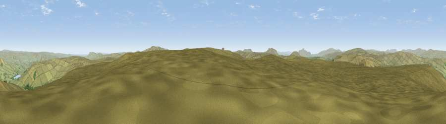

Viewpoint c9646_7813
#7755 in England · top 14% of its area beats it · —The view, rendered

A 360° render of this exact spot computed from the terrain model, tree cover and land cover — summer colours, afternoon light, calibrated against photographs of famous viewpoints. Real trees, hedges and buildings will differ in detail.
The panorama
Grey silhouette: terrain skyline in each direction (720 bearings, Earth curvature and refraction included). Dashed green: skyline with trees (+15 m) and buildings (+8 m) as obstacles. Blue strip: how far the ground is visible on each bearing.
Where the view opens
Wedge length = distance to the farthest visible ground on that bearing (vegetation-aware). Rings at 10, 25 and 50 km.
What fills the view
99% grassland · 1% woodland
Angular shares of the visible panorama (visual magnitude), not map area. Landscape diversity 0.04 (0–1 Shannon).
Key numbers
More beautiful places nearby
The staircase of upgrades: each row has a higher view potential than everything closer. Driving times are estimates from straight-line distance, calibrated against real road routing — check an actual route before setting out.
| Place | Direction | Drive | Score |
|---|---|---|---|
| Viewpoint c9662_7809 | NNW · 1 km | ~3 min | 69.4 |
| Drumaldrace | NW · 5 km | ~12 min | 70.9 |
| Viewpoint near Buckden | ESE · 6 km | ~13 min | 77.3 |
| Whernside | W · 17 km | ~29 min | 79.9 |
| Warton Crag | WSW · 42 km | ~62 min | 83.2 |
| Viewpoint near Grange-over-Sands | W · 51 km | ~73 min | 83.4 |
| Viewpoint near Finsthwaite | W · 52 km | ~73 min | 90.3 |
| The Knoll | S · 396 km | ~379 min | 91.0 |
54.23654, -2.14457 · source: screening · position refined by local search. Computed location — check access rights before visiting.